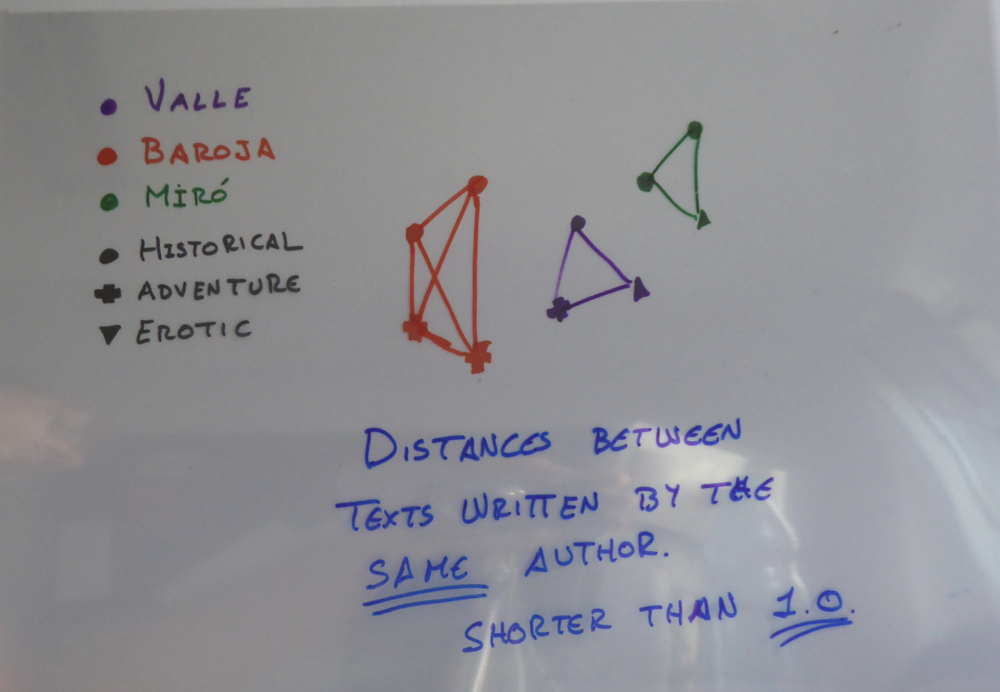

<!doctype html>
<html lang="en">
<head>
<meta charset="utf-8">
    <title>Neutralising the Authorial Signal in Delta by Penalization</title>
<meta name="author" content="José Calvo">
<meta name="description" content="Slides">
<meta name="apple-mobile-web-app-capable" content="yes">
<meta name="apple-mobile-web-app-status-bar-style" content="black-translucent">
<meta name="viewport" content="width=device-width, initial-scale=1.0, maximum-scale=1.0, user-scalable=no, minimal-ui">
<link rel="stylesheet" href="css/reveal.css">
<link rel="stylesheet" href="css/theme/simple.css" id="theme">
<link rel="stylesheet" href="lib/css/zenburn.css">
<script>
var link = document.createElement( 'link' );
link.rel = 'stylesheet';
link.type = 'text/css';
link.href = window.location.search.match( /print-pdf/gi ) ? 'css/print/pdf.css' : 'css/print/paper.css';
document.getElementsByTagName( 'head' )[0].appendChild( link );
</script>
<!--[if lt IE 9]>
<script src="lib/js/html5shiv.js"></script>
<![endif]-->
</head>

<body>
<div class="reveal">
<div class="slides">
<section data-markdown="" data-separator="^\n---\n" data-separator-vertical="^\n--\n" data-charset="utf-8">
<script type="text/template">

<!--  vvvvv THIS IS WHERE THE CONTENT GOES! vvvvvvv  -->

### Neutralising the Authorial Signal in Delta by Penalization
#### Stylometric Clustering of Genre in Spanish Novels
<hr/>
<br/>
<br/>
<small><b>José Calvo Tello, Daniel Schlör, Ulrike Henny, Christof Schöch</b></small>
<br/>
<br/>
<br/>
<small>Digital Humanities Conference, 2017, Montréal</small>
<br/>
<br/>
<small>Slides and Code: https://github.com/cligs/projects/tree/master/2017/dh/neutraliseDelta</small>
<br/>
<hr/>
<p></img>&nbsp;&nbsp;&nbsp;&nbsp;&nbsp;&nbsp;</img>&nbsp;&nbsp;&nbsp;&nbsp;&nbsp;&nbsp;</img></p>


---
## Table of Content
<br/>
* Coming from Traditional Stylometry
* Neutralising Author in Delta
* Test and Evaluation
* Conclusions

---
# Coming from Traditional Stylometry

--
## Stylometry: Author. Genre?

* Delta as “expression of difference, pure difference” (Burrows 2002: 269)
* Authorship attribution
* Other *signals*: genre, subgenre, period...
* Research on separation of signals (Schöch 2013 and 2014)
* Use of Delta for stylometry beyond authorship (Jannidis and Lauer 2014, Hoover 2014, Büttner and Proisl 2016)
<!--* Classification (Hettinger et al. 2016, Underwood 2014, Jockers 2013, Riddel and Schöch 2014)-->

--
## Clusters of Delta (dummy corpus)
* Clusters by author
* Subclusters by subgenre

</img>

---
# Neutralising Author in Delta

--
## Delta Values between Texts

</img>

--
## Clusters based on Delta: author and subgenre

</img>

--
## What if we separate the texts from the same author? And how?

</img>

--
## 1st type of distances: between texts of different authors

</img>

--
## 1st type of distances: between texts of different authors

</img>

--
## 2nd type of distances: between texts by the same author

</img>

--
## 2nd type of distances: between texts by the same author

</img>

--
## Distances between texts by the same author

</img>

--
## Distances between texts by different authors

</img>


--
## What is the average distance between texts by different authors?

</img>

--
## What is the average distance between texts by the same author?

</img>

--
## What is the difference between the *Mean of the author* and the *Mean of the corpus*?

</img>

--
## Adding the *Difference of the author*

</img>

--
## Distance of the same author + *Difference of the author*

</img>

--
## Distances by the same author are now greater

</img>

--
## New distribution of the distances

</img>

--
## New clusters: subgenre and author

</img>

--
## New clusters: subgenre and author

</img>


---
# Test and Evaluation

--
## Test and evaluation
<br/>
* Measure of evaluation for clusters: Homogeneity
* 7 corpora of novels in Spanish and one of French plays

--
## Homogeneity
<br/>
* Measure for evaluation of clustering: homogeneity (Rosenberg and Hirschberg, 2007)
* A homogeneous subcluster is a group of samples that all belong to a single class
* A homogeneous subcluster DOESN'T have to have all the samples of a class
* Values between 0 (worse than random) and 1 (perfect homogeneity)
* Ground truth: author and subgenre

--
## Evaluation of dummy corpus
<br/>

</img>


--
## Corpora
* Corpus of Spanish novel from 1880-1940
    * erotic-adventure
    * bildungsroman-adventure
    * historical-erotic
    * historical-bildungsroman
    * historical-adventure
    * bildungsroman-erotic
* Collection of 19th century Spanish-American novels (1880-1916)
    * historical-non historical
* Collection de pièces the théâtre français du dix-septième siècle
    * comedy-tragedy

GitHub repository with parts of the corpora in <a href="https://github.com/cligs/textbox">Textbox</a>: 
<br />https://github.com/cligs/textbox

--
## Evaluation of Spanish subcorpora
</img>

--
## Evaluation of Spanish subcorpora
</img>

--
## Evaluation of Spanish subcorpora
</img>

--
## Evaluation of Spanish-American novels and French plays
</img>

--
## General results

* The homogeneity of authorship drops: -0.52 and -0.1 (mean: -0.23; std: 0.12)
* The homogeneity of subgenre remains: between -0.08 and 0.19 (mean: 0.02; std: 0.07)
* The results for comparing very different subgenres (adventure-erotic; adventure-bildungsroman) are better than comparing similar subgenres (historical-adventure)

---
# Conclusions

--
## Conclusions

* Delta matrix contains information beyond authorship
* Calculations with the Delta values are possible
* Neutralisation of Delta:
    * Penalisation of the distances between the texts of the same author
    * by addition of the difference between the *Mean of the Author* and *Mean of the Corpus* made:
    * the homogeneity of author to deteriorate
    * the homogeneity of the subgenre to remain

--
## Next Steps

* Better tools for sampling considering metadata (author, subgenre, period...)
* Other ways to cluster Delta
* Use of classification instead of clustering
* Research about *Mean Delta of the Author*
* Neutralisation of authorship at the lexical level. I.e: How normal is the frequency of a word in a text, given that the texts was written by Valle?
* Delta: “expression of difference, pure difference” (Burrows 2002)

---

    </img>


<!--^^^^^^^ DON'T TOUCH UNLESS YOU KNOW WHAT YOU'RE DOING :-) ^^^^^^^-->

</script>
</section>
</div>
</div>

<script src="lib/js/head.min.js"></script>
<script src="js/reveal.js"></script>
<script>
// Full list of configuration options available at:
// https://github.com/hakimel/reveal.js#configuration
Reveal.initialize({
    controls: true,
    progress: true,
    history: true,
    center: true,
    transition: 'slide', // none/fade/slide/convex/concave/zoom
    // Optional reveal.js plugins
    dependencies: [
        { src: 'lib/js/classList.js', condition: function() { return !document.body.classList; } },
        { src: 'plugin/markdown/marked.js', condition: function() { return !!document.querySelector( '[data-markdown]' ); } },
        { src: 'plugin/markdown/markdown.js', condition: function() { return !!document.querySelector( '[data-markdown]' ); } },
        { src: 'plugin/highlight/highlight.js', async: true, callback: function() { hljs.initHighlightingOnLoad(); } },
        { src: 'plugin/zoom-js/zoom.js', async: true },
        { src: 'plugin/notes/notes.js', async: true }
        ]
    });
</script>
</body>
</html>
